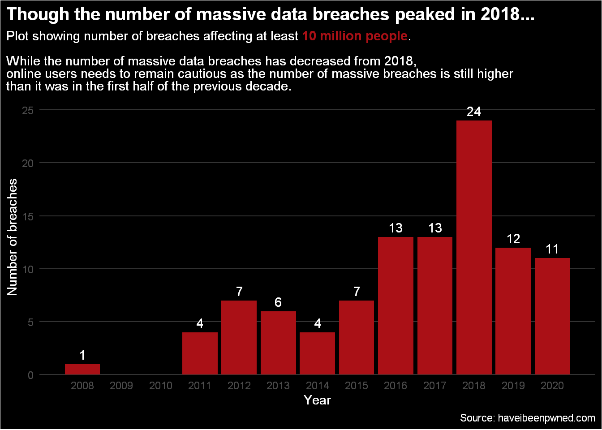
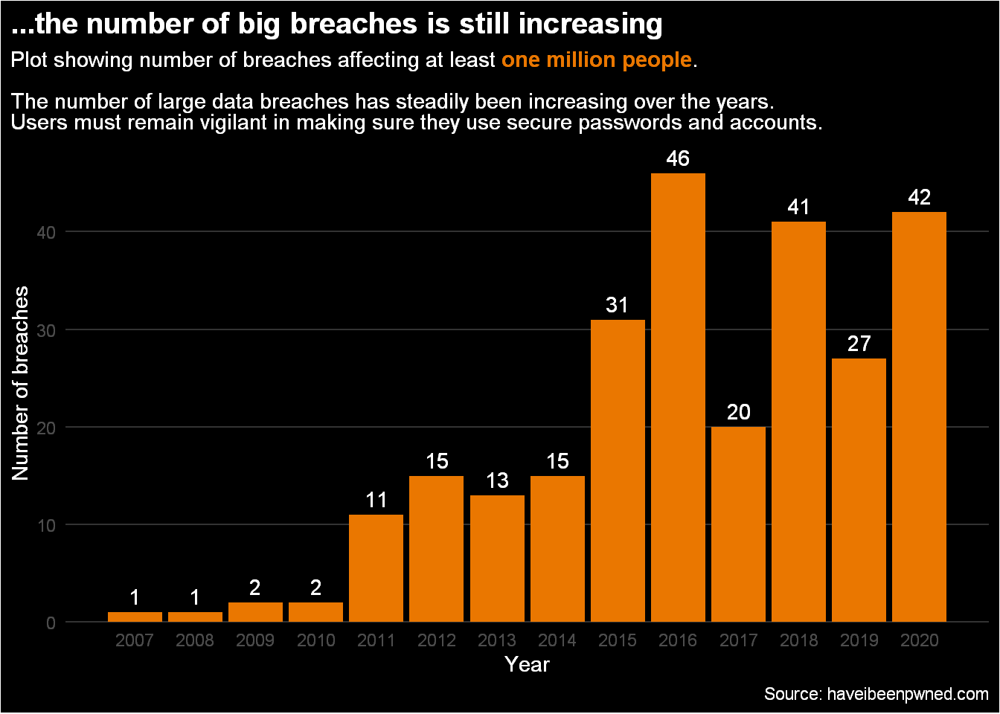

To “pwn” someone means that you have effectively overpowered or dominated that individual. It used to be most commonly used when someone was beaten in a video game, but now it refers to when a nefarious cyber-attack has occurred and someone has had their personal information stolen.
Recently, there was news of a major cyber-attack on several US federal government agencies. Known as the ‘Sunburst Breach’, it attacked various organisations by going through a supply chain, which in this case was a network management and monitoring tool from the company Solarwinds which has over 300,000 public and private customers. The attackers were able to gain access to private emails and other sensitive documents. This affected over 18,000 customers, some of which include:
The US Treasury Department
The US Department of Homeland Security
The US Department of State
The US Department of Energy
Cybersecurity and Infrastructure Agency
Microsoft
And many more…
This is one of many cyber-attacks that have occurred in recent years. As we live in an increasingly technological world, there will be an increasing number of vulnerabilities that malicious actors would wish to exploit; this can have a huge negative impact on not only on enterprises but to ordinary people as well, as important and sensitive information can be used by the attackers for their own benefit.
So we will investigate the questions of:
What type of information is being stolen?
How has the number of data breaches changed over time?
What were the scales of breaches, and did they also change over time?
We will use the site haveibeenpwned to answers these questions. This is a site that contains a list of all emails and passwords that have been compromised from a confirmed data breach, and users are able to input either an email address or password to find out if that information has been leaked.
The site is not an exhaustive list of all breaches that have happened as there are many that are undetected or unannounced, but the site does contain the subset of publicly announced breaches. To learn more about the site, you can visit the FAQs section of the site.
These are the libraries I will use in R
library(tidyverse)
library(ggtext)
library(wordcloud2)
#loadfonts(device = "win")
options(kableExtra.html.bsTable = TRUE) #Allows the use of nice looking tables for kableHere I use the API to obtain the data, the site also contains information on the attributes in the provided data dicitionary.
url <- "https://haveibeenpwned.com/api/v2/breaches"
raw_result <- httr::GET(url)
data_breaches <- httr::content(raw_result, as = "text") %>%
jsonlite::fromJSON()
data_breach <- data_breaches %>%
select(-LogoPath,-Description) %>%
mutate(across(ends_with("Date"), as.Date))We have 495 data breaches in this dataset, with 14 attributes. The attributes of most interest to us are:
name and title - refers to the source of the data breach.
BreachDate - refers to the date the breach occurred, it should be noted that breaches are frequently discovered after some time has passed since the initial breach has occurred.
PwnCount - the number of accounts affected in a data breach.
DataClasses - contains a list of the type of data stolen, this can include types like e-mails and passwords.
IsVerified - if the breach has been deemed legitimate.
IsFabricated - if the breach contains lots of fake date.
IsSensitive - if the breach contains information on a user that can have adverse reaction if they were discovered to be on the site. An example of a site that had a sensitive data breach is Ashley Madison - an online dating service for people in relationships or marriages. Here emails, names, home addresses, credit card information and other personal identifiable information was leaked.
IsSpamList - if the breach contains large amounts of personnel identifiable information used for the purpose of targeting spam.
IsRetired - a breach permanently deleted from the site. But there is only one instance of this in the dataset, so we won’t be worrying about this attribute.
We can count up the boolean attributes to get an idea of what type of breaches have occurred.
data_breach %>%
#group_by(IsVerified,IsFabricated,IsSensitive,IsRetired,IsSpamList) %>%
group_by(across(starts_with("IS"))) %>% # easier way than typing all of the above line
count(sort=TRUE,name = "Number of Breaches") %>%
kableExtra::kbl(caption = "The type of breaches")%>%
kableExtra::kable_styling(bootstrap_options = c("striped","condensed"),font_size = 12)| IsVerified | IsFabricated | IsSensitive | IsRetired | IsSpamList | Number of Breaches |
|---|---|---|---|---|---|
| TRUE | FALSE | FALSE | FALSE | FALSE | 430 |
| TRUE | FALSE | TRUE | FALSE | FALSE | 31 |
| FALSE | FALSE | FALSE | FALSE | FALSE | 26 |
| TRUE | FALSE | FALSE | FALSE | TRUE | 11 |
| FALSE | FALSE | TRUE | FALSE | FALSE | 4 |
| FALSE | TRUE | TRUE | FALSE | FALSE | 2 |
| TRUE | FALSE | FALSE | TRUE | FALSE | 1 |
We see what the vast majority of our data are from breaches that are verified, not fabricated, not sensitive, and is not a spam list. The second most common were verified and sensitive data breaches. The least common breach was verified and retired, the second least common type of breach were unverified, fabricated and sensitive data.
data_breach %>%
select(Title,BreachDate,PwnCount,DataClasses,IsVerified,IsFabricated,IsSensitive,IsSpamList) %>%
arrange(desc(BreachDate)) %>%
slice_head(n=8) %>%
kableExtra::kbl(caption = "The eight most recent data breaches",
format.args = list(big.mark = ",")
)%>%
kableExtra::kable_styling(bootstrap_options = c("striped","condensed"),font_size = 12)| Title | BreachDate | PwnCount | DataClasses | IsVerified | IsFabricated | IsSensitive | IsSpamList |
|---|---|---|---|---|---|---|---|
| Cit0day | 2020-11-04 | 226,883,414 | Email addresses, Passwords | FALSE | FALSE | FALSE | FALSE |
| Wongnai | 2020-10-28 | 3,924,454 | Dates of birth , Email addresses , Geographic locations , IP addresses , Names , Passwords , Phone numbers , Social media profiles | TRUE | FALSE | FALSE | FALSE |
| Animal Jam | 2020-10-12 | 7,104,998 | Dates of birth , Email addresses , Genders , IP addresses , Names , Passwords , Physical addresses, Usernames | TRUE | FALSE | FALSE | FALSE |
| Pixlr | 2020-10-07 | 1,906,808 | Email addresses , Geographic locations , Names , Passwords , Social media profiles | TRUE | FALSE | FALSE | FALSE |
| Chowbus | 2020-10-05 | 444,224 | Email addresses , Names , Phone numbers , Physical addresses | TRUE | FALSE | FALSE | FALSE |
| GeniusU | 2020-10-02 | 1,301,460 | Email addresses , Genders , IP addresses , Names , Passwords , Social media profiles | TRUE | FALSE | FALSE | FALSE |
| Nitro | 2020-09-28 | 77,159,696 | Email addresses, Names , Passwords | TRUE | FALSE | FALSE | FALSE |
| Experian (South Africa) | 2020-08-19 | 1,284,637 | Email addresses , Employers , Government issued IDs, Names , Occupations , Phone numbers | TRUE | FALSE | FALSE | FALSE |
From table 2, we see that the most recent hack was the Cit0day hack which contained nearly 227 million e-mail addresses and passwords. Other recent leaks such as the Wongnai leak contained information such as geographic locations, IP addresses, phone numbers, and social media profiles.
It is clear that a wide variety of information is being leaked, but is it possible to know what data is being leaked and which is the most common? From the data provided, the answer is yes!
We will obtain list of the types of stolen data. We see examples such as: Email addresses, IP addresses, names, password phone numbers, physical addresses, credit cards, biometric data to more spurious data such as eating habits, sexual fetishes, and astrological signs.
We can view the most common data types compromised.
data_breach %>%
select(DataClasses)%>%
unnest(cols = c(DataClasses)) %>%
count(DataClasses,sort = TRUE,name="Number of breaches") %>%
rmarkdown::paged_table()Showing the results in a graph,
data_breach %>%
select(DataClasses)%>%
unnest(cols = c(DataClasses)) %>%
count(DataClasses,sort=TRUE) %>%
slice_max(order_by = n,n=10) %>%
ggplot(aes(x=n,y=reorder(DataClasses,n)))+
geom_col(fill="#009732")+
geom_text(aes(label=n),hjust=-.1,colour="white")+
scale_x_continuous(expand= expansion(c(0,0.1) ))+
labs(title="Emails and passwords were the most common data stolen",
subtitle="Most common data stolen from major data breeches",
x="Number of Breaches",y="Data",
caption="Viz by: Gurpreet | Source: haveibeenpwned.com")+
theme(plot.background = element_rect(fill="black"),
panel.background = element_rect(fill="black"),
text = element_text(colour="white"),
axis.text = element_text(colour="white",size=10),
axis.text.x = element_text(colour="grey40"),
panel.grid = element_blank(),
panel.grid.major.x = element_line(colour="grey20"),
axis.ticks = element_blank(),
plot.title.position = "plot",
plot.caption = element_text(colour="grey50",))
Below we see a word cloud of the most common, hover over the text to see the number of times the particular data type was stolen.
set.seed(15)
data_breach %>%
select(DataClasses)%>%
unnest(cols = c(DataClasses)) %>%
count(DataClasses,sort=TRUE) %>%
# wordcloud2(color=sample( c("#00FF41","#7FE706","#48A70B","#A4FF00","#66FF01","#2CE71E","#0AAF30"),126,replace=TRUE), backgroundColor ="black",rotateRatio=0,size=0.5,fontFamily="Rockwell")
wordcloud2(color='random-light', backgroundColor = "black",rotateRatio=0,size=0.5,fontFamily="Rockwell")From this we see that e-mail addresses had appeared in in 490 out of the 495 possible breaches, meaning emails were stolen 95% of the time in this data set. Passwords were stolen 82% of the time.
data_breach %>%
transmute(DataClasses,BreachYear = lubridate::year(BreachDate)) %>%
unnest(cols = c(DataClasses)) %>%
mutate(DataClasses = fct_lump_n(DataClasses,n=9))%>%
count(DataClasses,BreachYear) %>%
complete(DataClasses,BreachYear,fill = list(n=0)) %>%
group_by(BreachYear) %>%
mutate(pct = n / sum(n))%>%
ggplot(aes(x=BreachYear,y=pct,fill=DataClasses))+
geom_area(colour="black")+
scale_y_continuous( expand = c(0,0), labels = scales::percent_format())+
scale_x_continuous( expand = c(0,0), labels = scales::number_format(accuracy = 1,big.mark = "") )+
labs(title="The proportions of the data type stolen has largely remained the same over time",
subtitle = "Percent of the top 9 most common data types stolen by year",caption="Source: haveibeenpwned.com",
y="Percent (%)",fill="Data Type")+
theme(panel.background = element_blank(),
axis.line = element_line(),
)We see that, broadly speaking, the type of data stolen has remained the same over the course of the years. There does not seem to be any major shift towards different data types being stolen.
data_breach %>%
transmute(DataClasses,BreachYear = lubridate::year(BreachDate)) %>%
unnest(cols = c(DataClasses)) %>%
count(DataClasses,BreachYear) %>%
mutate(DataClasses =fct_reorder2(DataClasses,BreachYear,n) ) %>%
ggplot(aes(x=BreachYear,y=n,col=DataClasses))+
geom_line(size=1.5)+
geom_point(size=2)+
gghighlight::gghighlight(last(n),max_highlight = 6,use_group_by = T, use_direct_label = FALSE , label_key = DataClasses)+
scale_x_continuous( breaks = seq(2007,2020,2) )+
labs(title= "Top six most common stolen data type of 2020 and their trends", subtitle="Number of breaches containing stolen data by year. Coloured by change since 2015",y="Number of Breaches",col="Data Type",caption="Source: haveibeenpwned.com")+
scale_color_manual(values = c("firebrick","forestgreen","firebrick2",
"green3","indianred3","olivedrab2"),
labels = c("Email addresses","Passwords","IP addresses",
"Name","Phone numbers","Physical addresses"))+
theme_minimal()+
theme(panel.grid.major.y = element_line(colour = "grey90"),
panel.grid = element_blank(),
legend.position = "bottom")
We see that the most common data types stolen in 2020 are: Email addresses, IP addresses, phone numbers, passwords, names, and physical addresses.
Of these we see that email addresses, IP addresses, and phone numbers have seen a declining trend since 2016, while passwords, names, and physical addresses have seen an increase from 2015.
data_breach %>%
transmute(DataClasses,PwnCount,BreachYear = lubridate::year(BreachDate)) %>%
unnest(cols = c(DataClasses)) %>%
complete(DataClasses,BreachYear,fill = list(PwnCount=0)) %>%
group_by(BreachYear,DataClasses) %>%
summarise(Total = sum(PwnCount),.groups="drop") %>%
ggplot(aes(x=BreachYear,y=Total,col=DataClasses))+
geom_point(size=2)+
geom_line(size=1.2)+
scale_y_continuous(labels = scales::label_number(accuracy = .5,scale = 1e-9, suffix = "B"), breaks = seq(0,3,.5)*1e9 )+
scale_x_continuous( breaks = seq(2007,2020,2) )+
labs(title="In 2019, over 2.5 billion emails addresses were leaked",subtitle = "Total number of data types leaked per year",
y="Number of leaks (Billions)",col="Data Type",caption="Source: haveibeenpwned.com")+
gghighlight::gghighlight(last(Total),max_highlight = 3,use_group_by = TRUE, use_direct_label = FALSE , label_key = DataClasses)+
theme_minimal()+
theme(panel.grid.major.y = element_line(colour = "grey90"),
panel.grid = element_blank(),
legend.position = "top")The above graph shows the trend of the 5 most leaked data types in 2020 and shows their trends. We see that in 2019, a staggering 2.5 billion email addresses were leaked. That means that if all 7.8 billion people in the world had an email address, 32% of them would have been leaked. However, it is extremely likely that there are many duplicated leaks, an example is many people using the common password of password. This is one of the most common passwords used1 and so would be “repeated” many times in the dataset, this holds true for other data types.
data_breach %>%
transmute(DataClasses,PwnCount,BreachYear = lubridate::year(BreachDate)) %>%
unnest(cols = c(DataClasses)) %>%
group_by(DataClasses) %>%
summarise(Total = sum(PwnCount),.groups="drop") %>%
arrange(-Total) %>%
rmarkdown::paged_table()The top 5 total number of data types leaked are
10 billion email addresses
7.5 billion passwords
4.6 billion names
3 billion phone numbers
2.6 billion IP addresses
Let’s look at the biggest data breaches in the dataset
data_breach %>%
slice_max(order_by=PwnCount,n=10) %>%
ggplot(aes(x=PwnCount,y=reorder(Title,PwnCount) ))+
geom_col(fill="#2915EA",col="#7161ed")+
geom_text(aes(label=scales::number(PwnCount/1e6,accuracy = 1) ) ,col="white",hjust=-.1)+
scale_y_discrete(labels = function(x) str_wrap(x, width = 25))+
scale_x_continuous(labels=scales::label_number_si(),limits=c(0,.9e9),expand = c(0,0))+
labs(title="The biggest data breaches known so far",subtitle="Billions of accounts containing personal details such as email adresses and passwords have been leaked.\nThis list only contains the known breaches, there is no telling how many unnoticed major data breaches have occured...",
x="Number of Accounts Affected (Millions)",y="Data Breach Source",caption="Source: haveibeenpwned.com")+
theme(panel.background = element_rect(fill="black"),
panel.grid = element_blank(),
panel.grid.major.x = element_line(colour="grey20"),
plot.background = element_rect(fill="black"),
text = element_text(colour = "white"),
axis.text.y =element_text(colour = "white"),
plot.title.position = "plot")
Recall that we had various types of breaches such as IsSensitve, IsFabricated, etc., We can further delve deeper into the different type of breaches.
Let’s look at the biggest sensitive breaches.
data_breach %>%
filter(IsSensitive==TRUE) %>%
select(Title,BreachDate,PwnCount) %>%
slice_max(order_by = PwnCount,n=10) %>%
ggplot(aes(x=PwnCount,y=reorder(Title,PwnCount) ))+
geom_col(fill="#480FF0",col="#906DF6")+
geom_text(aes(label=scales::number(PwnCount/1e6,accuracy = 1) ),hjust=-0.3,col="white")+
scale_x_continuous(labels=scales::label_number_si(),limits=c(0,1.9e8),expand = c(0,0))+
labs(title="The biggest sensitive data breaches",subtitle="A senstive breach can have an adverse effect on site users if discovered",
x="Number of Accounts Affected (Millions)",y="Site",caption="Source: haveibeenpwned.com")+
theme(panel.background = element_rect(fill="black"),
panel.grid = element_blank(),
panel.grid.major.x = element_line(colour="grey20"),
plot.background = element_rect(fill="black"),
text = element_text(colour = "white"),
axis.text.y =element_text(colour = "white"),
plot.title.position = "plot")
What were biggest data breaches that contained leaked password details?
data_breach %>%
unnest(DataClasses) %>%
filter(DataClasses == "Passwords") %>%
slice_max(order_by=PwnCount,n=15) %>%
ggplot(aes(x=PwnCount,y=reorder(Title,PwnCount) ))+
geom_col(fill="#0856F7",col="#3675f9")+
geom_text(aes(label=scales::number(PwnCount/1e6,accuracy = 1) ) ,col="white",hjust=-.1)+
scale_y_discrete(labels = function(x) str_wrap(x, width = 25))+
scale_x_continuous(labels=scales::label_number_si(),limits=c(0,.9e9),expand = c(0,0))+
labs(title="The data breaches with the most passwords leaked",subtitle="Billions of passwords have been leaked",x="Number of Accounts Affected (Millions)",y="Data Breach Source",caption="Source: haveibeenpwned.com")+
theme(panel.background = element_rect(fill="black"),
panel.grid = element_blank(),
panel.grid.major.x = element_line(colour="grey20"),
plot.background = element_rect(fill="black"),
text = element_text(colour = "white"),
axis.text.y =element_text(colour = "white"),
plot.title.position = "plot")Now we want to ask the question of how the frequency of data breaches has changed and how the scale has changed. Both can be answered by a simple scatter plot showing the number of breaches that affect \(X\) amount of accounts over time.
data_breach %>%
select(Name,PwnCount,BreachDate) %>%
arrange(-PwnCount)%>%
ggplot(aes(x=BreachDate,y=PwnCount ,col=PwnCount))+
geom_point(size=3)+
scale_x_date(date_labels = "%Y",date_breaks = "2 years")+
scale_y_continuous(labels = scales::label_number_si())+
scale_color_viridis_c(option="B",begin=0.2,end=1)+
labs(title="The scale of massive data breaches has increased over recent years",subtitle = "The number of accounts affected in a data breach over time",caption="Source: haveibeenpwned.com")+
theme(panel.background = element_rect(fill="black"),
panel.grid = element_blank(),
panel.grid.major.y = element_line(colour="grey30"),
plot.background = element_rect(fill="black"),
text = element_text(colour = "white"),
axis.text = element_text(colour="grey50"),
legend.position = "none")Figure 1:
From 2007 to 2010, data breaches were infrequent, and the largest breach affected just under 400 million accounts. It is plausible that since this was during the early part of the data collection, there could be many missing breaches. We wouldn’t be able to fully know how many there were during this time, but at least we have some data to point to.
After 2010, we start seeing breaches of increasing frequency and scale. Around 2017, there are several breaches that number over 400 million affected accounts.
we can also display this scatter plot using a log scale, this will also us to discern what is going on for very small values of PwnCount - as we have truly huge numbers on the scale of \(10^7\)
Figure 2: Same data as Figure 1 but displayed on a log scale - note that the colour is on the same linear scale as Figure 2

Notice how we can tell how the distribution changed over time, we see more “small-scale” and “large-scale” breaches as time goes by. The low-scale hacks seem to be of the order of \(\exp(7) \approx 10^3\), while large scale hacks are on the order of \(\exp(20)\approx 10^{8}\). So, we have a wide range of accounts affected, from as low as thousands to as high as hundreds of millions.
data_breach %>%
transmute(PwnCount,
BreachYear = lubridate::year(BreachDate)) %>%
ggplot(aes(x=BreachYear,y= log(PwnCount) ,group=BreachYear))+
geom_boxplot(fill="gold",outlier.shape = NA)+
geom_jitter(width = 0.2,height=0,alpha=0.2,col="black")+
scale_x_continuous(breaks = seq(2007,2020,1))+
labs(title="The average scale of breaches does not appear to change over time",subtitle = "Boxplot of the number of accounts affected in a breach grouped by year, on a log scale",caption="Source: haveibeenpwned.com")+
theme_minimal()+
theme(panel.grid = element_blank(),
panel.grid.major.y = element_line(colour="grey70"))Figure 3: Grouping size of breaches by year
From just eye-balling this graph, it doesn’t really appear that there has been a change in the average number of accounts affected in a breach over the years. Though one could argue the variance is changing over time.
table1 <- data_breach %>%
select(Name,PwnCount,BreachDate) %>%
arrange(PwnCount) %>%
slice_head(n=3)
table2 <- data_breach %>%
select(Name,PwnCount,BreachDate) %>%
arrange(-PwnCount) %>%
slice_head(n=3)
k1 <- knitr::kable(table1,caption = "Smallest breaches",
format.args = list(big.mark = ","),
align = "c") %>%
kableExtra::kable_styling( bootstrap_options = c("striped","condensed"),
position ="float_left",full_width = F)
k2 <- knitr::kable(table2,caption = "Largest breaches",
format.args = list(big.mark = ","),
align = "c") %>%
kableExtra::kable_styling( bootstrap_options = c("striped","condensed"),
position = "left",full_width = F)
knitr::kables( list(k1,k2) )
|
|
Now we will see if the number of attacks has changed over time. First, we will look at breaches that have affected at least 10 million accounts.
Now we will consider the larger scales of 10 million and 1 million respectively.
data_breach %>%
transmute(Substantial = if_else(PwnCount>=1e7,TRUE,FALSE ),
breachyear = lubridate::year(BreachDate)) %>%
filter(Substantial == TRUE) %>%
group_by(breachyear)%>%
count(Substantial) %>%
ggplot(aes(x=breachyear,y=n))+
geom_col(fill="#AA1016")+
geom_text(aes(label=n),vjust=-.5,col="white")+
scale_x_continuous(breaks= seq(2008,2020,1))+
scale_y_continuous(expand=expansion(mult = 0),limits = c(0,24) )+
labs(title="Though the number of massive data breaches peaked in 2018...",
subtitle = "Plot showing number of breaches affecting at least <span style = 'color: #AA1016'>**10 million people**</span>. \n \nWhile the number of massive data breaches has decreased from 2018,<br>online users needs to remain cautious as the number of massive breaches is still higher<br> than it was in the first half of the previous decade.",
y="Number of breaches",x="Year",caption="Source: haveibeenpwned.com")+
theme(panel.background = element_rect(fill="black"),
panel.grid = element_blank(),
panel.grid.major.y = element_line(colour="grey20"),
axis.ticks = element_blank(),
plot.background = element_rect(fill="black"),
text = element_text(colour = "white"),
legend.position = "none",
plot.title = element_text(size=15,face = "bold"),
plot.title.position = "plot",
plot.subtitle = ggtext::element_markdown())

We see that while massive breaches have decreased since 2018, there is still an increasing number of big breaches.
There are lots more we could find out more specifically by diving deeper into the dataset, but we will finish by looking at when breaches were reported, namely, we will look at the day and month of reported breach date.
data_breach %>%
mutate( dow = lubridate::wday(BreachDate,label=TRUE,week_start=1)) %>%
group_by(dow) %>%
count() %>%
ggplot(aes(x=dow,y=n))+
geom_col(fill="dodgerblue4")+
geom_text(aes(label=n),vjust=-.4)+
labs(title="Breaches are most commonly reported on a Monday or Thursday",subtitle="Day of week of reported breach",caption="Source: haveibeenpwned.com",
x="Day of Week",y="Number of Breaches")+
theme_minimal()+
theme(panel.grid.major.x = element_blank())We see that Monday and Thursday are the days with the most reported breaches, while Saturday is the least common - this shouldn’t be too surprising as Saturday is a weekend. But Sunday, also a weekend, has the third highest number of reported breaches.
data_breach %>%
mutate( month = lubridate::month(BreachDate,label=TRUE)) %>%
group_by(month) %>%
count() %>%
ggplot(aes(x=month,y=n))+
geom_col(fill="cadetblue4")+
geom_text(aes(label=n),vjust=-.4)+
labs(title="Summer and Winter are the most common times of year for breaches to occur",subtitle="Month of year of breach report",caption="Source: haveibeenpwned.com",
x="Month",y="Number of Breaches")+
theme_minimal()+
theme(panel.grid.major.x = element_blank())We see that early Summer is when most breaches are reported generally speaking, but it also appears that the Winder season is also common too. The Summer spike could be explained by individuals being lax or unavailable as it is the Summer holidays, and the Winter spike could be explained by the fact that there are many holiday events taking place or being in the festive spirit.
breach_by_dates <- data_breach %>%
transmute( BreachMonth = lubridate::month(BreachDate,label=TRUE),
BreachDay = lubridate::mday(BreachDate)
) %>%
arrange(BreachMonth,BreachDay) %>%
group_by(BreachMonth,BreachDay) %>%
count() %>%
ungroup()
dummy_dates <- tibble (date = seq(lubridate::ymd("2020-01-01"), lubridate::ymd("2020-12-31"), by = "days")) %>%
mutate( month = lubridate::month(date,label=TRUE),
day = lubridate::day(date))
right_join(x=breach_by_dates,y=dummy_dates, by=c("BreachMonth"="month","BreachDay"="day")) %>%
arrange(BreachMonth,BreachDay) %>%
replace_na(list(n=0)) %>%
mutate( n = n/sum(n)*100 ) %>%
ggplot(aes(x=BreachDay,y=reorder(BreachMonth,desc(BreachMonth)) ,fill=n))+
geom_tile()+
scale_fill_viridis_c(option="B",end=0.8,labels=c("0%","2%","4%","6%"))+
scale_y_discrete()+
scale_x_continuous(expand = c(0,0), breaks = seq(1,31,7) )+
labs(title="Many data breaches are reported on January 1st",subtitle ="Percent of breaches reported by day of month across the year",x="Day",y="",fill="% of\nBreaches",caption="Source: haveibeenpwned.com")+
theme(panel.background = element_blank(),
axis.ticks.y = element_blank())It is evident that the first day of the year is the day where most breaches are reported, though why this is the case I’m not entirely sure.
Sometimes bad news gets dumped on days when a major story has broken or people are busy focusing on something else, this way the bad news does not get as much attention as it normally would on an “ordinary” day. This is slightly cynical, but perhaps announcing hacks on New Year’s Day follows this trend? But this doesn’t explain why lots of reports of breaches are reported on the first day of a month.
breach_by_dates %>%
arrange(-n) %>%
rename("Number of Reported Breaches"=n) %>%
slice_head(n=10) %>%
kableExtra::kbl(caption = "10 most common day of months for breaches to be reported" ,align = "c") %>%
kableExtra::kable_styling(bootstrap_options = c("striped","condensed"),full_width = F)| BreachMonth | BreachDay | Number of Reported Breaches |
|---|---|---|
| Jan | 1 | 32 |
| Jul | 1 | 19 |
| Jun | 1 | 12 |
| Dec | 1 | 9 |
| Mar | 1 | 8 |
| Sep | 1 | 8 |
| Apr | 1 | 7 |
| Feb | 1 | 6 |
| Aug | 1 | 6 |
| Feb | 20 | 4 |
Let’s look back at the questions asked earlier and answer them here:
The five most common types of information stolen are: emails addresses, passwords, usernames, IP addresses, and personal names.
From 2007 onwards, there has been a gradual increase in the number of breaches affecting at least 1,000 people. From just one breach in 2007, to 48 in 2020, with a peak of 90 in 2016.
Typically the smallest breaches affects thousands of people, while the largest affects hundreds of millions. From simply viewing the data on figure 3, there does not appear to be any change in the average scale of breaches over time.
This ends our look into the data of data breaches. As stressed earlier, the data does not cover every breach that has ever happened. There could be many breaches that have happened that occurred on a massive scale and breadth that has not been publicly disclosed.
From my understanding of the data, it doesn’t seem to include data breaches or cyber-attacks conducted by state level actors; the scale of attacks committed at this level could be extremely high.
In any case, I personally don’t think we’ll ever know the true scale of all data breaches committed.
Most common passwords 2020 - Nordpass↩︎